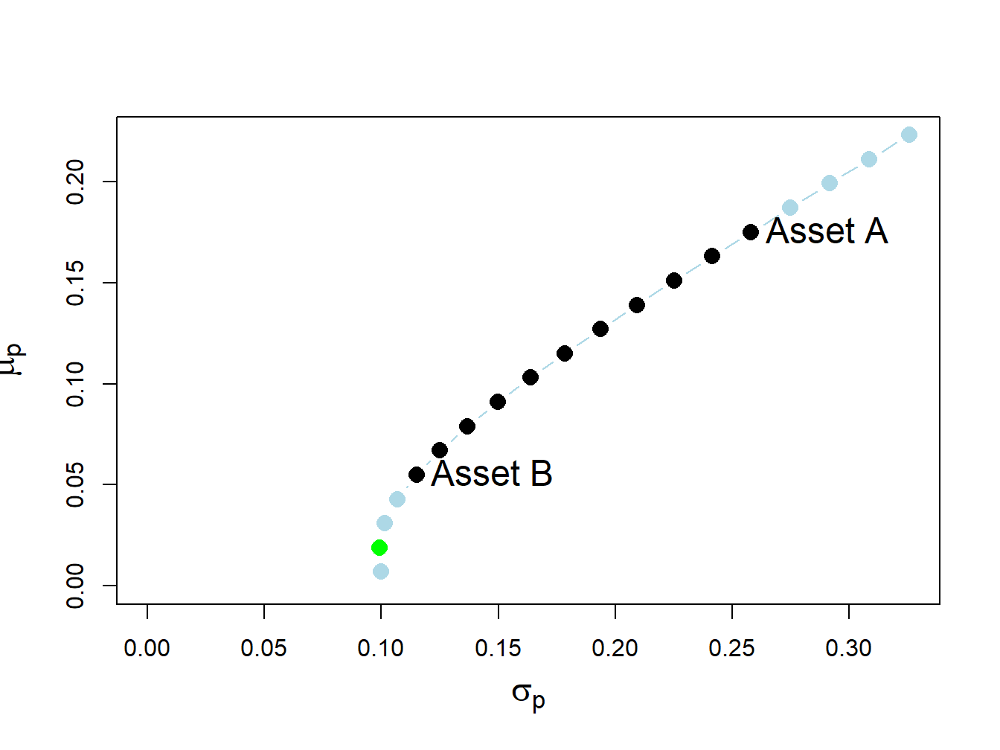
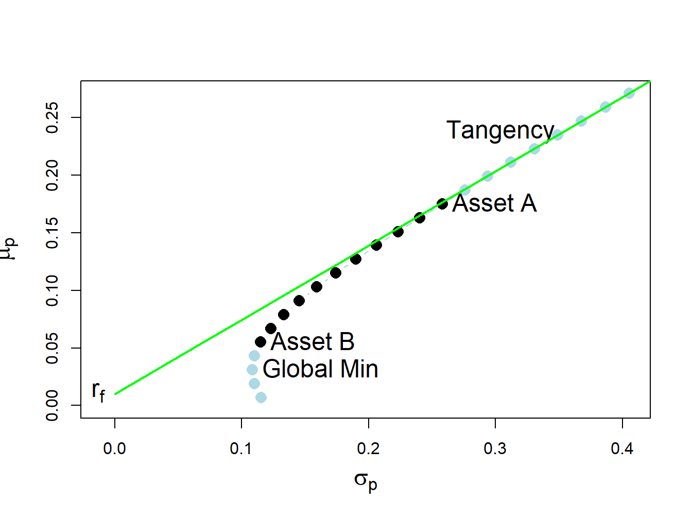
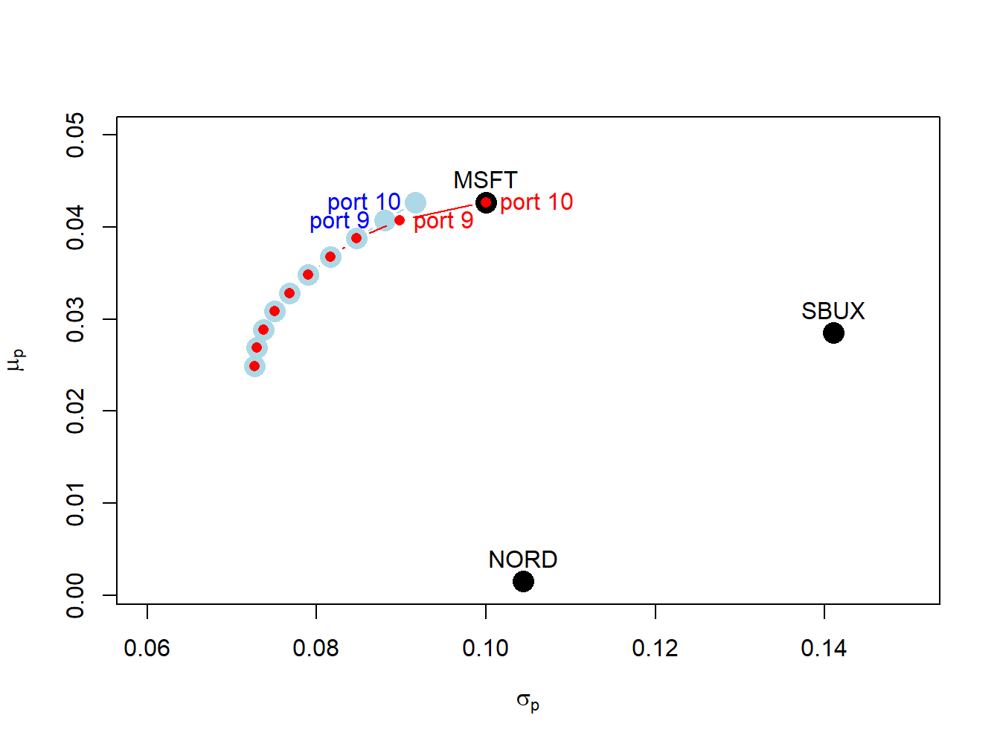
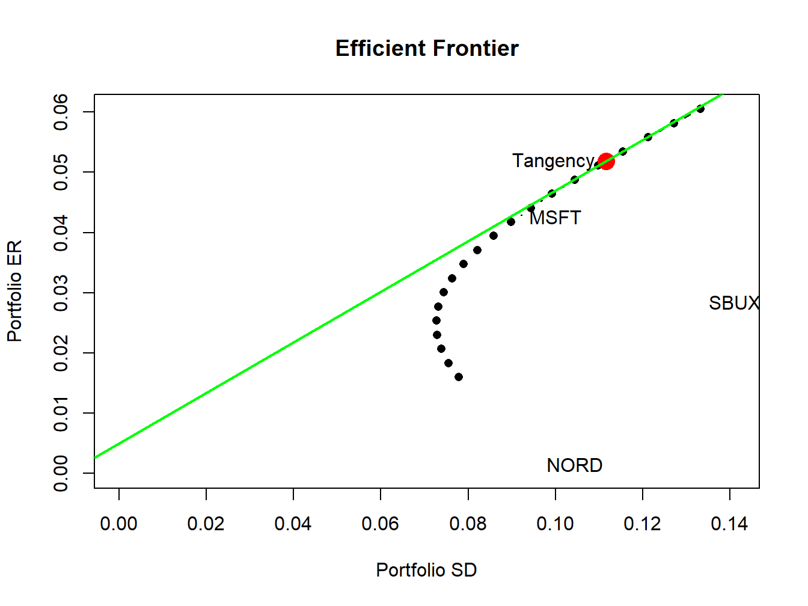

The portfolio theory I described in Chapters Chapter 10 and Chapter 11 assumed that investors can freely short sell all assets. In many situation, however, investors may not be allowed to short sell some or all assets and/or there may be restrictions on when short sales may occur. In particular, certain types of assets (e.g., mutual funds) cannot be sold short. This has implications for asset allocation in individual retirement accounts. Some institutions, such as pension funds, are prevented from directly short selling assets. Government regulations may prevent certain assets from being sold short, or prevent short sales from occurring at certain times. For example, during the 2008 financial crisis the Securities and Exchange Commission temporarily blocked the short sale of financial stocks. Because of these practical limitations on short sales, it is important to be able to incorporate short sales restrictions into mean-variance portfolio theory in practice and in this chapter I describe how to do it.
This chapter is organized as follows. In Section 12.2 I describe the impact of short sales constraints, on the investment in risky assets, on efficient portfolios in the simplified two risky asset setting presented in Chapter 10. In Section 12.3 I discuss the computation of mean-variance efficient portfolios when there are short sales constraints in the general case of \(N\) risky assets, as described in Chapter 11, using quadratic programming. In Section 12.5 I give a real-world application of the theory to asset allocation among Vanguard mutual funds.
The examples I cover in this chapter use the introcompfinr, PerformanceAnalytics, and quadprog packages. Make sure these packages are installed and loaded in R before replicating the chapter examples.
12.1 Overview of Short Selling
Most investments involve purchases of assets that you believe will increase in value over time. When you buy an asset you establish a long position in the asset. You profit from the long position by selling the asset in the future at a price higher than the original purchase price. However, sometimes you may believe that an asset will decrease in value over time. To profit on an investment in which the asset price is lower in the future requires short selling the asset. In general, short selling involves selling an asset you borrow from someone else today and repurchasing the asset in the future and returning it to its owner. You profit on the short sale if you repurchase the asset for a lower price than you initially sold it. Because short selling involves borrowing it is a type of leveraged investment and so risk increases with the size of the short position.
In practice, a short sale of an asset works as follows. Suppose you have an investment account at some brokerage firm and you are interested in short selling one share of an individual stock, such as Microsoft, that you do not currently own. Because the brokerage firm has so many clients, one of the clients will own Microsoft. The brokerage firm will allow you to borrow Microsoft, sell it and add the proceeds of the short sale to your investment account. Doing so establishes a short position in Microsoft which is a liability to return the borrowed share sometime in the future. You close the short position in the future by repurchasing one share of Microsoft through the brokerage firm who returns the share to the original owner. However, borrowing is not free. You will have to pay interest on the amount borrowed. You will also need sufficient capital in your account to cover any potential losses from the short sale. In addition, if the price of the short sold asset rises substantially during the short sale period then the brokerage firm may require you to add additional margin capital to your account. If you cannot do this then the brokerage firm will force you to close the short position immediately.
12.2 Portfolio Theory with Short Sales Constraints in a Simplified Setting
In this section, we illustrate the impact of short sales constraints on risky assets on portfolios in the simplified setting described in Chapter Chapter 10. We first look at simple portfolios of two risky assets, then consider portfolios of a risky asset plus a risk-free asset, and finish with portfolios of two risky assets plus a risk-free asset.
12.2.1 Two Risky Assets
Consider the two risky asset example data from Chapter Chapter 10:
Asset A is the high average return and high risk asset, and asset B is the low average return and low risk asset. Consider the following set of 19 portfolios:
Figure 12.1: Two-risky asset portfolio frontier. Long-only portfolios are in black (between Asset B and Asset A), and long-short portfolios are in blue (below Asset B and above Asset A).
The long only (no short sale) portfolios, shown in black dots between the points labeled “Asset B” and “Asset A”, are portfolios 5 to 15. The asset weights on these portfolios are:
The long-short portfolios, shown in blue dots below the point labeled “Asset B” and above the point labeled “Asset A”, are portfolios 1 to 4 and portfolios 16 to 19:
Not allowing short sales for asset A eliminates the inefficient portfolios 1 to 4 (blue dots below the label “Asset B” ), and not allowing short sales for asset B eliminates the efficient portfolios 16 to 19 (blue dots above the label “Asset A” ). We make the following remarks:
Not allowing short sales in both assets limits the set of feasible portfolios.
It is not possible to invest in a portfolio with a higher expected return than asset A.
It is not possible to invest in a portfolio with a lower expected return than asset B.
12.2.1.1 Short sales constraints and the global minimum variance portfolio
Recall, the two risky asset global minimum variance portfolio solves the unconstrained optimization problem: \[\begin{align*}
&\underset{m_{A},m_{B}}{\min}\sigma_{p}^{2} =m_{A}^{2}\sigma_{A}^{2}+m_{B}^{2}\sigma_{B}^{2}+2m_{A}m_{B}\sigma_{AB}\\
&s.t.~m_{A}+m_{B} =1.
\end{align*}\]
From Chapter Chapter 10, the two risky asset unconstrained global minimum variance portfolio weights are:
This means that if we disallow short-sales in both assets we still get the same global minimum variance portfolio weights. In this case, we say that the no short sales constraints are not binding (have no effect) on the solution for the unconstrained optimization problem Equation 12.1. However, it is possible for one of the weights in the global minimum variance portfolio to be negative if correlation between the returns on assets A and B is sufficiently positive. To see this, the numerator in the formula for the global minimum variance weight for asset A can be re-written as:1
and contains a negative weight in asset A. This portfolio is shown as the green dot in Figure Figure 12.2, and plots below the point labeled “Asset B” . Here, the no-short sales constraint on asset A is a binding constraint: it is not possible to invest in the global minimum variance portfolio without shorting asset A. Visually, we can see that the feasible long-only portfolio with the smallest variance is 100% invested in asset B. This is the no short sales constrained global minimum variance portfolio. Notice that the variance of this portfolio is larger than the variance of the global minimum variance portfolio. This is the cost, in terms of variance, of imposing the no-short sales constraint.

Figure 12.2: Two risky asset portfolio frontier with short sale in Asset A in the global minimum variance portfolio.
12.2.2 One risky asset and a risk-free asset
Now consider portfolios of a risky asset (e.g., asset A) and a risk-free asset (e.g., U.S. T-Bill) with risk-free rate \(r_{f}>0\). Let \(x\) denote the portfolio weight in the risky asset. Then \(1-x\) gives the weight in the risk-free asset. From Chapter Chapter 10, the expected return and volatility of portfolios of one risky asset and one risk-free asset are: \[\begin{eqnarray*}
\mu_{p} & = & r_{f}+x(\mu-r_{f}),\\
\sigma_{p} & = & |x|\sigma,
\end{eqnarray*}\] where \(\mu\) and \(\sigma\) are the expected return and volatility of the risky asset, respectively. For example, Figure Figure 12.3 shows 29 portfolios of asset A and the risk-free asset with \(r_{f}=0.03\) created with:
Figure 12.3: Return-risk characteristics of portfolios of asset A and a risk-free asset with \(r_{f}=0.03\). Long-only portfolios are in black (between \(\mathrm{r}_{f}\) and Asset A), and long-short portfolios are in blue (below \(\mathrm{r}_{f}\) and above Asset A).
The portfolios (blue dots) above the point labeled “Asset A” are short the risk-free asset and long more than 100% of asset A. The portfolios (blue dots) below \(r_{f}=0.03\) are short the risky asset and long more than 100% in the risk-free asset.
Here, we assume that the short sales constraint only applies to the risky asset and not the risk-free asset. That is, we assume that we can borrow and lend at the risk-free rate \(r_{f}\) without constraints. In this situation, the no short sales constraint on the risky asset eliminates the inefficient portfolios (blue dots) below the risk-free rate \(r_{f}\).
12.2.3 Two risky assets and risk-free asset
As discussed in Chapter Chapter 10, in the case of two risky assets (with no short sales restrictions) plus a risk-free asset the set of efficient portfolios is a combination of the tangency portfolio (i.e., the maximum Sharpe ratio portfolio of two risky assets) and the risk-free asset. For the example data with \(\rho_{AB}=-0.164\) and \(r_{f}=0.03\), the tangency portfolio is:
No asset is sold short in the unconstrained tangency portfolio, and so this is also the short-sales constrained tangency portfolio. The set of efficient portfolios is illustrated in Figure Figure 12.4, created with:
Figure 12.4: Efficient portfolios of two risky assets plus a risk-free asset: \(\rho_{AB}=-0.164\) and \(r_{f}=0.03\). No short sales in unconstrained tangency portfolio.
Figure Figure 12.4 shows that when the tangency portfolio is located between the global minimum variance portfolio (tip of the Markowitz bullet) and asset A, there will be no short sales in the tangency portfolio. However, if the correlation between assets A and B is sufficiently positive (and the risk-free rate is adjusted so that it is less than the expected return on the global minimum variance portfolio) then asset B can be sold short in the unconstrained tangency portfolio. For example, if \(\rho_{AB}=0.7\) and \(r_{f}=0.01\) the unconstrained tangency portfolio becomes:
Now, asset B is sold short in the tangency portfolio. The set of efficient portfolios in this case is illustrated in Figure Figure 12.5. Notice that the tangency portfolio is located on the set of risky asset only portfolios above the point labeled “Asset A”, which indicates that asset B is sold short and more than 100% is invested in asset A.2

Figure 12.5: Efficient portfolios of two risky assets plus a risk free asset: \(\rho_{AB}=0.7\) and \(r_{f}=0.01\). Asset B sold short in unconstrained tangency portfolio. The short sale constrained tangency portfolio is the point labeled “Asset A”.
When shorts sales of risky assets are not allowed, the unconstrained tangency portfolio is infeasible. In this case, the constrained tangency portfolio is not the tangency portfolio but is 100% invested in asset A. This portfolio is located at the tangency point of a straight line drawn from the risk-free rate to the long-only risky asset frontier. Here, the cost of the no-short sales constraint is the reduction in the Sharpe ratio of the tangency portfolio. The Sharpe ratio of the constrained tangency portfolio is the Sharpe ratio of asset A:
Code
(mu.A - r.f)/sig.A#> [1] 0.64
Hence, the cost of the no short sales constraint in this example is very small.
12.3 Portfolio Theory with Short Sales Constraints in a General Setting
In this section we extend the analysis of the previous section to the more general setting of \(N\) risky assets plus a risk free asset.
12.3.1 Multiple risky assets
Example 12.1 (Random portfolios of Microsoft Nordstrom and Starbucks with no-short sales) The example data on Microsoft, Nordstrom and Starbucks from Chapter Chapter 11 is used to illustrate the computation of mean-variance efficient portfolios with short sales constraints. These data are created using:
The impact of the no short sales restrictions on the risk-return characteristics of feasible portfolios is nicely illustrated by constructing random long-only portfolios of these three assets:
Here we first create 400 random weights for Microsoft and Nordstrom that lie between zero and one, respectively. Then, we determine the weight on Starbucks and throw out portfolios for which the weight on Starbucks is negative. The remaining 191 portfolios are then long-only portfolios. To be sure, these weights are illustrated in Figure Figure 12.6 created using:
Figure 12.7: Risk-return characteristics of 191 random long-only portfolios of Microsoft, Nordstrom and Starbucks.
The shape of the risk-return scatter is revealing. No random long-only portfolio has an expected return higher than the expected return on Microsoft, which is the asset with the highest expected return. Similarly, no random portfolio has an expected return lower than the expected return on Nordstrom - which is the asset with the lowest expected return. Finally, no random portfolio has a volatility higher than the volatility on Starbucks, the asset with the highest volatility. The scatter of points has a convex (to the origin) parabolic-shaped outer boundary with endpoints at Microsoft and Nordstrom, respectively. The points inside the boundary taper outward from Starbucks towards the outer boundary. The entire risk-return scatter resembles an umbrella tipped on its side with spires extending from the outer boundary to the individual assets. \(\blacksquare\)
Consider an investment universe with \(N\) risky assets whose simple returns are described by the GWN model with expected return vector \(\boldsymbol{\mu}\) and covariance matrix \(\boldsymbol{\Sigma}\). The optimization problem to solve for the global minimum variance portfolio \(\mathbf{m}\) with no-short sales constraints on all assets is a straightforward extension of the problem that allows short sales. We simply add the \(N\) no-short sales inequality constraints \(m_{i}\geq0\,(i=1,\ldots,N)\). The optimization problem is: \[
\begin{aligned}
\min_{\mathbf{m}}\sigma_{p,m}^{2} & =\mathbf{m}^{\prime}\boldsymbol{\Sigma} \mathbf{m}\\
\text{s.t. } \mathbf{m}^{\prime}\mathbf{1} & =1,\nonumber \\
m_{i} & \geq0\text{ }(i=1,\ldots,N).\nonumber
\end{aligned}
\tag{12.2}\] Here, there is one equality constraint, \(\mathbf{m}^{\prime}\mathbf{1}=1\), and \(N\) inequality constraints, \(m_{i}\geq0\text{ }(i=1,\ldots,N)\).
Similarly, the optimization problem to solve for a minimum variance portfolio \(\mathbf{x}\) with target expected return \(\mu_{p}^{0}\) and no short sales allowed for any asset becomes: \[
\begin{aligned}
\min_{\mathbf{x}}\sigma_{p,x}^{2} & =\mathbf{x}^{\prime}\boldsymbol{\Sigma} \mathbf{x} \\
\text{s.t. }\mu_{p,x} & =\mathbf{x}^{\prime}\boldsymbol{\mu}=\mu_{p}^{0}, \\
\mathbf{x}^{\prime}\mathbf{1} & =1, \\
x_{i} & \geq0\text{ }(i=1,\ldots,N).
\end{aligned}
\tag{12.3}\] Here there are two equality constraints, \(\mathbf{x}^{\prime}\boldsymbol{\mu}=\mu_{p}^{0}\) and \(\mathbf{x}^{\prime}\mathbf{1}=1\), and \(N\) inequality constraints, \(x_{i}\geq0\text{ }(i=1,\ldots,N)\)
Remarks:
The optimization problems Equation 12.2 and Equation 12.3, unfortunately, cannot be analytically solved using the method of Lagrange multipliers due to the inequality constraints. They must be solved numerically using an optimization algorithm. Fortunately, the optimization problems Equation 12.2 and Equation 12.3 are special cases of a more general quadratic programming problem for which there is a specialized optimization algorithm that is fast and efficient and available in R in the package quadprog.3
There may not be a feasible solution to Equation 12.3. That is, there may not exist a no-short sale portfolio \(\mathbf{x}\) that reaches the target return \(\mu_{p}^{0}.\) For example, in Figure Figure 12.7 there is no efficient portfolio that has target expected return higher than the expected return on Microsoft. In general, with \(N\) assets there is no feasible solution to Equation 12.3 for target expected returns higher than the maximum expected return among the \(N\) assets. If you try to solve Equation 12.3 for an infeasible target expected return, the numerical optimizer will return an error message that indicates no solution is found.
The portfolio variances associated with the solutions to Equation 12.2 and Equation 12.3, respectively, must be at least as large as the variances associated with the solutions that do not impose the short sales restrictions. Intuitively this makes sense. Adding additional constraints to a minimization problem will lead to a higher minimum at the solution if the additional constraints are binding. If the constraints are not binding, then the solution with and without the additional constraints are the same.
The entire frontier of minimum variance portfolios without short sales exists only for target expected returns between the expected return on the global minimum variance portfolio with no short sales that solves Equation 12.2 and the target expected return equal to the maximum expected return among the \(N\) assets. For these target returns, the no-short sales frontier will lie inside and to the right of the frontier that allows short sales if the no-short sales restrictions are binding for some asset.
The entire frontier of minimum variance portfolios without short sales can no longer be constructed from any two frontier portfolios. It has to be computed by brute force for each portfolio solving Equation 12.3 with target expected return \(\mu_{p}^{0}\) above the expected return on the the global minimum variance portfolio that solves Equation 12.2 and below the target return equal to the maximum expected return among the \(N\) assets.
12.4 Quadratic Programming Problems
In this Section, we show that the inequality constrained portfolio optimization problems Equation 12.2 and Equation 12.3 are special cases of more general quadratic programming problems and we show how to use the function solve.QP() from the R package quadprog to numerically solve these problems.
Quadratic programming (QP) problems are of the form: \[
\min_{\mathbf{x}} ~ \frac{1}{2}\mathbf{x}^{\prime}\mathbf{Dx}-\mathbf{d}^{\prime}\mathbf{x}, ~ \text{s.t. }
\tag{12.4}\]\[
\mathbf{A}_{eq}^{\prime}\mathbf{x} \geq\mathbf{b}_{eq}\text{ for }l\text{ equality constraints,}
\tag{12.5}\]\[
\mathbf{A}_{neq}^{\prime}\mathbf{x} =\mathbf{b}_{neq}\text{ for }m\text{ inequality constraints},
\tag{12.6}\]
where \(\mathbf{D}\) is an \(N\times N\) matrix, \(\mathbf{x}\) and \(\mathbf{d}\) are \(N\times1\) vectors, \(\mathbf{A}_{neq}^{\prime}\) is an \(m\times N\) matrix, \(\mathbf{b}_{neq}\) is an \(m\times1\) vector, \(\mathbf{A}_{eq}^{\prime}\) is an \(l\times N\) matrix, and \(\mathbf{b}_{eq}\) is an \(l\times1\) vector.
The solve.QP() function from the R package quadprog can be used to solve QP functions of the form Equation 12.4 - Equation 12.6. The function solve.QP() takes as input the matrices and vectors \(\mathbf{D}\), \(\mathbf{d}\), \(\mathbf{A}_{eq}\), \(\mathbf{b}_{eq},\)\(\mathbf{A}_{neq}\) and \(\mathbf{b}_{neq}\):
where the arguments Dmat and dvec correspond to the matrix \(\mathbf{D}\) and the vector \(\mathbf{d}\), respectively. The function solve.QP(), however, assumes that the equality and inequality matrices (\(\mathbf{A}_{eq},\,\mathbf{A}_{neq}\)) and vectors (\(\mathbf{b}_{eq},\,\mathbf{b}_{neq}\)) are combined into a single \((l+m)\times N\) matrix \(\mathbf{A}^{\prime}\) and a single \((l+m)\)\(\times1\) vector \(\mathbf{b}\) of the form: \[
\mathbf{A}^{\prime}=\left[\begin{array}{c}
\mathbf{A}_{eq}^{\prime}\\
\mathbf{A}_{neq}^{\prime}
\end{array}\right],\,\mathbf{b}=\left(\begin{array}{c}
\mathbf{b}_{eq}\\
\mathbf{b}_{neq}
\end{array}\right).
\] In solve.QP(), the argument Amat represents the matrix \(\mathbf{A}\) (not \(\mathbf{A}^{\prime})\) and the argument bmat represents the vector \(\mathbf{b}\). The argument meq determines the number of linear equality constraints (i.e., the number of rows \(l\) of \(\mathbf{A}_{eq}^{\prime}\)) so that \(\mathbf{A}^{\prime}\) can be separated into \(\mathbf{A}_{eq}^{\prime}\) and \(\mathbf{A}_{neq}^{\prime}\), respectively.
12.4.1 No short sales global minimum variance portfolio
The portfolio optimization problems Equation 12.2 and Equation 12.3 are special cases of the general QP problem Equation 12.4 - Equation 12.6. Consider first the problem to find the global minimum variance portfolio Equation 12.2. The objective function \(\sigma_{p,m}^{2}=\mathbf{m}^{\prime}\boldsymbol{\Sigma} \mathbf{m}\) can be recovered from Equation 12.4 by setting \(\mathbf{x}=\mathbf{m}\), \(\mathbf{D}=2\times\boldsymbol{\Sigma}\) and \(\mathbf{d}=(0,\ldots,0)^{\prime}.\) Then, \[
\frac{1}{2}\mathbf{x}^{\prime}\mathbf{Dx}-\mathbf{d}^{\prime}\mathbf{x}=\mathbf{m}^{\prime}\boldsymbol{\Sigma} \mathbf{m}=\sigma_{p,m}^{2}.
\] Here, there is one equality constraint, \(\mathbf{m}^{\prime}\mathbf{1}=1\), and \(N\) inequality constraints, \(m_{i}\geq0\text{ }(i=1,\ldots,N)\), which can be expressed compactly as \(\mathbf{m}\geq\mathbf{0}\). These constraints can be expressed in the form Equation 12.5 and Equation 12.6 by defining the restriction matrices: \[\begin{align*}
\underset{(1\times N)}{\mathbf{A}_{eq}^{\prime}} & =\mathbf{1}^{\prime},\text{ }\underset{(1\times1)}{\mathbf{b}_{eq}}=1\\
\underset{(N\times N)}{\mathbf{A}_{neq}^{\prime}} & =\mathbf{I}_{N},\underset{(N\times1)}{\mathbf{b}_{neq}}=(0,\ldots,0)^{\prime}=\mathbf{0},
\end{align*}\] so that \[
\mathbf{A}^{\prime}=\left[\begin{array}{c}
\mathbf{1}^{\prime}\\
\mathbf{I}_{N}
\end{array}\right],\,\mathbf{b}=\left(\begin{array}{c}
1\\
\mathbf{0}
\end{array}\right).
\] Here, \[\begin{eqnarray*}
\mathbf{A}_{eq}^{\prime}\mathbf{m} & = & \mathbf{1^{\prime}m}=1=b_{eq},\\
\mathbf{A}_{neq}^{\prime}\mathbf{m} & = & \mathbf{I}_{N}\mathbf{m}=\mathbf{m}\geq\mathbf{0}=\mathbf{b}_{neq}.
\end{eqnarray*}\]
Example 12.2 (Global minimum variance portfolio with no short sales for three asset example data) The unconstrained global minimum variance portfolio of Microsoft, Nordstrom and Starbucks is:
This portfolio does not have any negative weights and so the no-short sales restriction is not binding. Hence, the short sales constrained global minimum variance is the same as the unconstrained global minimum variance portfolio.
The restriction matrices and vectors required by solve.QP() to compute the short sales constrained global minimum variance portfolio are:
To find the short sales constrained global minimum variance portfolio, call solve.QP() with the above inputs and set meq=1 to indicate one equality constraint:
The portfolio weights are in the solution component, which match the global minimum variance weights allowing short sales, and satisfy the required constraints (weights sum to one and all weights are positive). The minimized value of the objective function (portfolio variance) is in the value component. See the help file for solve.QP() for explanations of the other components.
You can also use the introcompfinr function globalmin_portfolio() to compute the global minimum variance portfolio subject to short-sales constraints by specifying the optional argument shorts=FALSE:
When shorts=FALSE, globalmin_portfolio() uses solve.QP() as described above to do the optimization. \(\blacksquare\)
12.4.2 No short sales minimum variance portfolio with target expected return
Next, consider the problem Equation 12.3 to find a minimum variance portfolio with a given target expected return. The objective function Equation 12.4 has \(\mathbf{D}=2\times\boldsymbol{\Sigma}\) and \(\mathbf{d}=(0,\ldots,0)^{\prime}.\) The two linear equality constraints, \(\mathbf{x}^{\prime}\boldsymbol{\mu}=\mu_{p}^{0}\) and \(\mathbf{x}^{\prime}\mathbf{1}=1\), and \(N\) inequality constraints \(\mathbf{x}\geq\mathbf{0}\) have restriction matrices and vectors: \[\begin{align*}
\underset{(2\times N)}{\mathbf{A}_{eq}^{\prime}} & =\left(\begin{array}{c}
\boldsymbol{\mu}^{\prime}\\
\mathbf{1}^{\prime}
\end{array}\right),\,\underset{(2\times1)}{\mathbf{b}_{eq}}=\left(\begin{array}{c}
\mu_{p}^{0}\\
1
\end{array}\right).\text{ }\\
\underset{(N\times N)}{\mathbf{A}_{neq}^{\prime}} & =\mathbf{I}_{N},\,\underset{(N\times1)}{\mathbf{b}_{neq}}=(0,\ldots,0)^{\prime}.
\end{align*}\] so that \[
\mathbf{A}^{\prime}=\left(\begin{array}{c}
\boldsymbol{\mu}^{\prime}\\
\mathbf{1}^{\prime}\\
\mathbf{I}_{N}
\end{array}\right),\text{ }\mathbf{b}=\left(\begin{array}{c}
\mu_{p}^{0}\\
1\\
\mathbf{0}
\end{array}\right).
\] Here, \[\begin{eqnarray*}
\mathbf{A}_{eq}^{\prime}\mathbf{x} & = & \left(\begin{array}{c}
\boldsymbol{\mu}^{\prime}\\
\mathbf{1}^{\prime}
\end{array}\right)\mathbf{x=}\left(\begin{array}{c}
\boldsymbol{\mu}^{\prime}\mathbf{x}\\
\mathbf{1}^{\prime}\mathbf{x}
\end{array}\right)=\left(\begin{array}{c}
\mu_{p}^{0}\\
1
\end{array}\right)=\mathbf{b}_{eq},\\
\mathbf{A}_{neq}^{\prime}\mathbf{x} & = & \mathbf{I}_{N}\mathbf{x}=\mathbf{x}\geq0.
\end{eqnarray*}\]
Example 12.3 (Minimum variance portfolio with target expected return and no short sales for three asset example data) Now, we consider finding the minimum variance portfolio that has the same mean as Microsoft but does not allow short sales. First, we find the minimum variance portfolio allowing for short sales using the introcompfinr function efficient_portfolio():
This portfolio has a short sale (negative weight) in Nordstrom. Hence, when the short sales restriction is imposed it will be binding. Next, we set up the restriction matrices and vectors required by solve.QP() to compute the minimum variance portfolio with no-short sales:
With short sales not allowed, the minimum variance portfolio with the same mean as Microsoft is 100% invested in Microsoft. This is consistent with what we see in Figure Figure 12.7. The volatility of this portfolio is slightly higher than the volatility of the portfolio that allows short sales:
You can also use the introcompfinr function efficient_portfolio() to compute a minimum variance portfolio with target expected return subject to short-sales constraints by specifying the optional argument shorts=FALSE:
Suppose you try to find a minimum variance portfolio with target return higher than the mean of Microsoft while imposing no short sales:
Code
# efficient_portfolio(mu.vec, sigma.mat, # target_return = mu.vec["MSFT"]+0.01, # shorts = FALSE) # uncomment this line to see the results
Here, solve.QP() reports the error “constraints are inconsistent, no solution!” This agrees with what we see in Figure Figure 12.7. \(\blacksquare\)
Example 12.4 (Compute efficient frontier portfolios from three asset example data) In this example we compare the efficient frontier portfolios computed with and without short sales. This can be easily done using the IntroCompFinR function efficient.frontier(). First, we compute the efficient frontier allowing short sales for target returns between the mean of the global minimum variance portfolio and the mean of Microsoft:
Code
ef =efficient_frontier(mu.vec, sigma.mat, alpha_min=0, alpha_max=1, nport=10) ef$weight_mat#> MSFT NORD SBUX#> port 1 0.441 0.3656 0.193#> port 2 0.484 0.3149 0.201#> port 3 0.527 0.2642 0.209#> port 4 0.570 0.2135 0.217#> port 5 0.613 0.1628 0.224#> port 6 0.656 0.1121 0.232#> port 7 0.699 0.0614 0.240#> port 8 0.742 0.0107 0.248#> port 9 0.785 -0.0400 0.256#> port 10 0.827 -0.0907 0.263
Here, portfolio 1 is the global minimum variance portfolio and portfolio 10 is the efficient portfolio with the same mean as Microsoft. Notice that portfolios 9 and 10 have negative weights in Nordstrom. Next, we compute the efficient frontier not allowing short sales for the same range of target returns:
Code
ef.ns =efficient_frontier(mu.vec, sigma.mat, alpha_min=0, alpha_max=1, nport=10, shorts=FALSE) ef.ns$weight_mat#> MSFT NORD SBUX#> port 1 0.441 0.3656 0.193#> port 2 0.484 0.3149 0.201#> port 3 0.527 0.2642 0.209#> port 4 0.570 0.2135 0.217#> port 5 0.613 0.1628 0.224#> port 6 0.656 0.1121 0.232#> port 7 0.699 0.0614 0.240#> port 8 0.742 0.0107 0.248#> port 9 0.861 0.0000 0.139#> port 10 1.000 0.0000 0.000
Portfolios 1 - 8 have all positive weights and are the same as portfolios 1 - 8 when short sales are allowed. However, for portfolios 9 and 10 the short sales constraint is binding. For portfolio 9, the weight in Nordstrom is forced to zero and the weight in Starbucks is reduced. For portfolio 10, the weights on Nordstrom and Starbucks are forced to zero. The two frontiers are illustrated in Figure Figure 12.8. For portfolios 1-8, the two frontiers coincide. For portfolios 9 and 10, the no-shorts frontier lies inside and to the right of the short-sales frontier. The cost of the short sales constraint is the increase in the volatility of minimum variance portfolios for target returns near the expected return on Microsoft.

Figure 12.8: Efficient frontier portfolios with and without short sales. The unconstrained efficient frontier portfolios are in blue, and the short sales constrained efficient portfolios are in red. The unconstrained portfolios labeled port 9 and port 10 have short sales in Nordstrom. The constrained portfolio labeled port 9 has zero weight in Nordstrom, and the constrained portfolio labeled port 10 has zero weights in Nordstrom and Starbucks.
\(\blacksquare\)
12.4.3 No short sales tangency portfolio
Consider an investment universe with \(N\) risky assets and a single risk-free asset. We assume that short sales constraints only apply to the \(N\) risky assets, and that investors can borrow and lend at the risk-free rate \(r_{f}\). As shown in Chapter Chapter 11, with short sales allowed, mean-variance efficient portfolios are combinations of the risk-free asset and the tangency portfolio. The tangency portfolio is the maximum Sharpe ratio portfolio of risky assets and is the solution to the maximization problem: \[\begin{eqnarray*}
\underset{\mathbf{t}}{\max}\,\frac{\mu_{t}-r_{f}}{\sigma_{t}} & = & \frac{\mathbf{t}^{\prime}\boldsymbol{\mu}-r_{f}}{(\mathbf{t}^{\prime}\boldsymbol{\Sigma}\mathbf{t})^{1/2}}\,s.t.\\
\mathbf{t}^{\prime}\mathbf{1} & = & 1.
\end{eqnarray*}\]
Example 12.5 (Compute efficient portfolios allowing short sales from three asset example data when there is a risk-free asset) Assuming a risk-free rate \(r_{f}=0.005\), we can compute the unconstrained tangency portfolio for the three asset example data using the IntroCompFinR function tangency.portfolio():
Here, the unconstrained tangency portfolio has a negative weight in Nordstrom so that the short sales constraint on the risky assets will be binding. The unconstrained set of efficient portfolios, that are combinations of the risk-free asset and the unconstrained tangency portfolio, is illustrated in Figure Figure 12.9.

Figure 12.9: Efficient portfolios of three risky assets and a risk-free asset allowing short sales. Nordstrom is sold short in the unconstrained tangency portfolio.
Here, we see that the unconstrained tangency portfolio is located on the frontier of risky asset portfolios above the point labeled “MSFT”. The green line represents portfolios of the risk-free asset and the unconstrained tangency portfolio. \(\blacksquare\)
Under short sales constraints on the risky assets, the maximum Sharpe ratio portfolio solves: \[\begin{eqnarray*}
\max_{\mathbf{t}}\,\frac{\mu_{t}-r_{f}}{\sigma_{t}} & = & \frac{\mathbf{t}^{\prime}\boldsymbol{\mu}-r_{f}}{(\mathbf{t}^{\prime}\boldsymbol{\Sigma}\mathbf{t})^{1/2}}\,s.t.\\
\mathbf{t}^{\prime}\mathbf{1} & = & 1,\\
t_{i} & \geq & 0,\,i=1,\ldots,N.
\end{eqnarray*}\] This optimization problem cannot be written as a QP optimization as expressed in Equation 12.4 - Equation 12.6. Hence, it looks like we cannot use the function solve.QP() to find the short sales constrained tangency portfolio. However, it turns out we can use solve.QP() to find the short sales constrained tangency portfolio. To do this we utilize the alternative derivation of the tangency portfolio presented in Chapter Chapter 11. The alternative way to compute the tangency portfolio is to first find a minimum variance portfolio of risky assets and a risk-free asset whose excess expected return, \(\tilde{\mu}_{p,x}=\boldsymbol{\mu}^{\prime}\mathbf{x}-r_{f}\mathbf{1}\), achieves a target excess return \(\tilde{\mu}_{p,0}=\mu_{p,0}-r_{f}>0\). This portfolio solves the minimization problem: \[
\min_{\mathbf{x}}~\sigma_{p,x}^{2}=\mathbf{x}^{\prime}\boldsymbol{\Sigma} \mathbf{x}\textrm{ s.t. }\tilde{\mu}_{p,x}=\tilde{\mu}_{p,0},
\] where the weight vector \(\mathbf{x}\) is not constrained to satisfy \(\mathbf{x}^{\prime}\mathbf{1}=\mathbf{1}\). The tangency portfolio is then determined by normalizing the weight vector \(\mathbf{x}\) so that its elements sum to one:4\[
\mathbf{t}=\frac{\mathbf{x}}{\mathbf{x}^{\prime}\mathbf{1}}=\frac{\boldsymbol{\Sigma}^{-1}(\boldsymbol{\mu}-r_{f}\cdot\mathbf{1})}{\mathbf{1}^{\prime}\boldsymbol{\Sigma}^{-1}(\boldsymbol{\mu}-r_{f}\cdot\mathbf{1})}.
\] An interesting feature of this result is that it does not depend on the value of the target excess return value \(\tilde{\mu}_{p,0}=\mu_{p,0}-r_{f}>0\). That is, every value of \(\tilde{\mu}_{p,0}=\mu_{p,0}-r_{f}>0\) gives the same value for the tangency portfolio.5 We can utilize this alternative derivation of the tangency portfolio to find the tangency portfolio subject to short-sales restrictions on risky assets. First we solve the short-sales constrained minimization problem: \[
\min_{\mathbf{x}}~\sigma_{p,x}^{2} = \mathbf{x}^{\prime}\boldsymbol{\Sigma} \mathbf{x}\textrm{ s.t. }
\tag{12.7}\]\[
\tilde{\mu}_{p,x} = \tilde{\mu}_{p,0},
\tag{12.8}\]\[
x_{i} \geq 0,\,i=1,\ldots,N.
\tag{12.9}\] Here we can use any value for \(\tilde{\mu}_{p,0}\) so for convenience we use \(\tilde{\mu}_{p,0}=1\). This is a QP problem with \(\mathbf{D}=2\times\boldsymbol{\Sigma}\) and \(\mathbf{d}=(0,\ldots,0)^{\prime}\), one linear equality constraint, \(\tilde{\mu}_{p,x}=\tilde{\mu}_{p,0},\) and \(N\) inequality constraints \(\mathbf{x}\geq\mathbf{0}\). The restriction matrices and vectors are: \[\begin{align*}
\underset{(1\times N)}{\mathbf{A}_{eq}^{\prime}} & =(\boldsymbol{\mu}-r_{f}\mathbf{1})^{\prime},\,\underset{(1\times1)}{\mathbf{b}_{eq}}=1,\text{ }\\
\underset{(N\times N)}{\mathbf{A}_{neq}^{\prime}} & =\mathbf{I}_{N},\,\underset{(N\times1)}{\mathbf{b}_{neq}}=(0,\ldots,0)^{\prime}.
\end{align*}\] so that \[
\mathbf{A}^{\prime}=\left(\begin{array}{c}
(\boldsymbol{\mu}-r_{f}\mathbf{1})^{\prime}\\
\mathbf{I}_{N}
\end{array}\right),\text{ }\mathbf{b}=\left(\begin{array}{c}
1\\
\mathbf{0}
\end{array}\right).
\] Here, \[\begin{eqnarray*}
\mathbf{A}_{eq}^{\prime}\mathbf{x} & = & (\boldsymbol{\mu}-r_{f}\mathbf{1})^{\prime}\mathbf{x=\tilde{\mu}_{p,x}}=1,\\
\mathbf{A}_{neq}^{\prime}\mathbf{x} & = & \mathbf{I}_{N}\mathbf{x}=\mathbf{x}\geq0.
\end{eqnarray*}\] After solving the QP problem for \(\mathbf{x}\), we then determine the short-sales constrained tangency portfolio by normalizing the weight vector \(\mathbf{x}\) so that its elements sum to one: \[
\mathbf{t}=\frac{\mathbf{x}}{\mathbf{x}^{\prime}\mathbf{1}}.
\]
Example 12.6 (Compute efficient portfolios not allowing short sales from three asset example data when there is a risk-free asset) First, we use solve.QP() to find the short sales restricted tangency portfolio. The restriction matrices for the short sales constrained optimization Equation 12.7 - Equation 12.9 are:
In this portfolio, the allocation to Nordstrom, which was negative in the unconstrained tangency portfolio, is set to zero.
To verify that the derivation of the short sales constrained tangency portfolio does not depend on \(\tilde{\mu}_{p,0}=\mu_{p,0}-r_{f}>0\), we repeat the calculations with \(\tilde{\mu}_{p,0}=0.5\) instead of \(\tilde{\mu}_{p,0}=1\):
You can compute the short sales restricted tangency portfolio using the introcompfinr function tangency_portfolio() with the optional argument shorts=FALSE:
Notice that the Sharpe ratio on the short sales restricted tangency portfolio is slightly smaller than the Sharpe ratio on the unrestricted tangency portfolio.
The set of efficient portfolios are combinations of the risk-free asset and the short sales restricted tangency portfolio. These portfolios are illustrated in Figure Figure 12.10, created using:
Figure 12.10: Efficient frontier portfolios of three risky assets and a risk-free asset not allowing short sales
\(\blacksquare\)
12.5 Application to Vanguard Mutual Funds
In this section, we revisit the application of mean-variance portfolio theory to the problem of asset allocation among six Vanguard mutual funds that was discussed at the end of Chapter Chapter 11. For the sub-sample January, 2010 through December, 2014 it was shown that estimated mean-variance efficient portfolios had short sales in many of the Vanguard funds. Since it is not possible to short mutual funds, we re-estimate the efficient portfolios with the additional constraints that all portfolio weights must be positive. The monthly returns and annualized GWN model estimates for the Vanguard funds are created using:
We use the introcompfinr portfolio functions to compute unrestricted and short-sales restricted estimates of the global minimum variance portfolio, the tangency portfolio, and the efficient frontier of risky assets:
In the short sales restricted global minimum variance portfolio there is 98% weight on vbisx (low volatility US short-term bond fund) and 2% weight on vfinx (S&P 500 fund). The weights on other funds are pushed to zero. The volatility of the short sales restricted portfolio is slightly higher than the volatility of the unrestricted portfolio and so the cost of the short sales restrictions is small.
The short sales restricted tangency portfolio has positive weights on vfinx, vbltx, and vbisx and zero weights for the remaining assets. The Sharpe ratio of the short sales restricted tangency portfolio, however, is substantially smaller than the Sharpe ratio of the unrestricted portfolio.
Figure Figure 12.11 shows the short sales restricted and unrestricted efficient portfolio frontiers, created using:
Figure 12.11: Unrestricted and short sales restricted efficient portfolio frontiers.
The short sales restricted risky asset only frontier, shown in red, lies underneath and to the right of the unrestricted risky asset frontier, shown in blue. The short sales restricted tangency portfolio has a similar expected return as the unrestricted tangency portfolio but has a higher volatility and a lower Sharpe ratio.
12.6 Further Reading: Portfolio Theory with Short Sales Constraints
Mention other quadratic programming packages: ROI etc. See Doug’s book
{MartinSchererYollin} Martin, R.D., Scherer, B., and Yollin, G. (2016).
Pfaff, B. 2013. Financial Risk Modelling and Portfolio Optimization with r. Chichester, UK.: Wiley.
By the Cauchy-Schwarz inequality the denominator for \(m_{A}\) in Equation 12.1 is always positive. ↩︎
Also notice that when \(\rho_{AB}=0.7\) the expected return on the global minimum variance drops (frontier of risky assets is shifted down) below \(0.03\) so we need to reduce \(r_{f}\) to \(0.01\) to ensure that the tangency portfolio has a positive slope. ↩︎
See the CRAN Optimization Task View for additional R packages that can be used to solve QP problems.↩︎
This normalization ensures that the tangency portfolio is 100% invested in the risky assets.↩︎
If \(\tilde{\mu}_{p,0}=0\) then the portfolio of risky assets and the risk-free asset has expected return equal to \(r_{f}\). In this case, \(\mathbf{x}=\mathbf{0}\) and \(x_{f}=1\). ↩︎